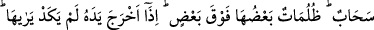

hükmünü ve kazâsını “bulmuştur;” Nitekim Allah “Muhakkak Rabbin (her an)
gözetlemededir.” (el-Fecr, 89/14) yâni mahlûkâtın dönüşü O’nadır, buyurmaktadır.
“Allah ise, onun hesâbını tastamam görmüştür.” Ona amelinin karşılığını tam olarak
verir. Bundan sonra o kişiyi, içine düştüğü çaresizlik ve ümitsizlik sebebiyle ifâdesi
mümkün olmayan pek çirkin bir hal bürür. Onun bu hâli, bir menfaat elde etme arzusuyla
padişahın kapısına gelen ve fakat feci bir dayak yiyen kimsenin durumuna benzer.
“Allah hesâbı çok çabuk görür.” Hiçbir hesap O’nu başka bir hesâbı görmekten
alıkoyamaz.
Kâşifî der ki: “Hak Teâlâ çabuk hesap görücüdür. Birinin hesâbını görmek O’nu
başkasının hesâbını görmekten alıkoymaz. Cenâb-ı Hak kâfirin amelini seraba, onu da
ciğeri yanmış susuz kimseye benzetir. Susamış kimse seraptan ümitsiz olur, harâretinin
şiddeti daha da artar. İşte kâfirlerin de bunun gibi amelleri sâbit olmadığından dolayı
hasretleri artar.”
Âyette nimetlere nankörlük edenlere işâret vardır. Bunlar Allah’ın kendilerine
bahşettiği nimetleri, O’na masiyet ve emirlerine muhâlefet yolunda harcayıp sonra
babalarından gördükleri âdet ve şekle tâbi olmaları yüzünden işin hakîkatine
bakmaksızın sırf başkaları görsün ve duysun diye gaflet üzere amel eden kimselerdir.
Onlar bilgisizlikleri sebebiyle kendilerinin iyi bir iş yaptıklarını zannederler. Şeytan
onlara amellerini süslü göstermiştir. Onların bu amelleri, hiçbir faydası olmayan serap
gibidir. Bu amelleri işleyen kişi, gaflet ve cehâletinden dolayı kendisinin bu karışık
amellerinin Allah’ın öfke ateşini söndüreceğini sanır. Ölüm anında bu amellerle
karşılaşınca onların umduğu menfaati sağlamadığını anlar. Amellerini tartmak, hesâbını
görmek ve karşılığını vermek üzere Allah’ı orada hazır bulur. Allah kendisine karşı
kötü muâmelede bulunmasından dolayı ona gazaplı haldedir. Ona hak ettiği cezâyı verir.
“Allah hesâbı çabuk olandır” ifâdesi işâret etmektedir ki kişinin dünya hayatında
çirkin ahlâk ve hâlleri sebebiyle işlediği kötü amellerinin izlerinin şahsında ve
davranışlarında tezahür etmesi de Allah’ın hesâbının süratli olmasındandır.
40. Yahut (o kâfirlerin duygu, düşünce ve davranışları) engin bir denizdeki yoğun
karanlıklar gibidir; (öyle bir deniz) ki, onu dalga üstüne dalga kaplıyor; üstünde de
bulut... Birbiri üstüne karanlıklar... İnsan, elini çıkarıp uzatsa, neredeyse onu dahi
göremez. Allah bir kimseye nûr vermemişse, artık o kimsenin nûru yoktur.
“Yahut (o kâfirlerin duygu, düşünce ve davranışları) engin” “bir denizdeki yoğun
karanlıklar gibidir”